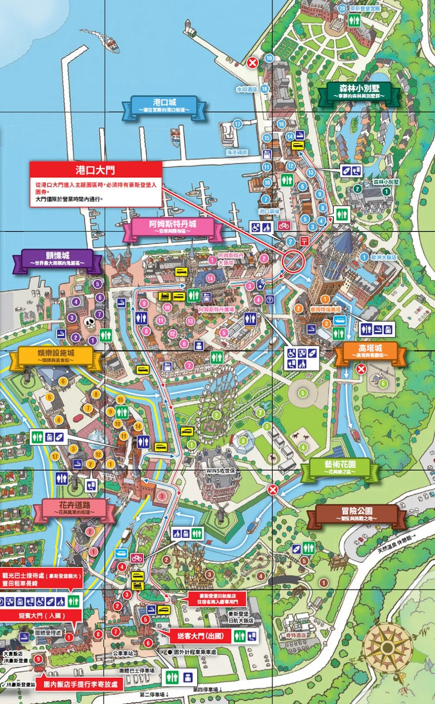
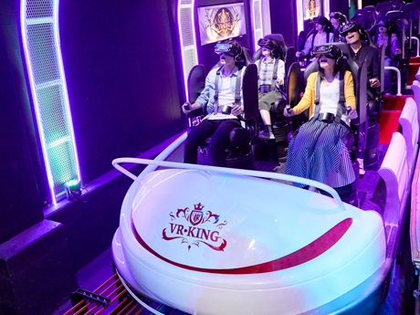
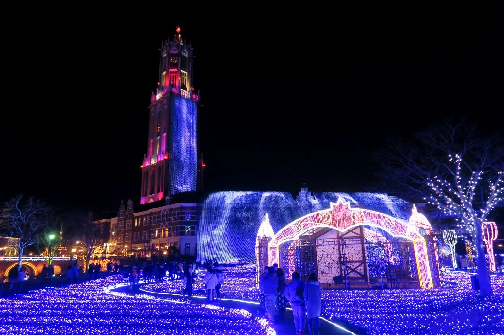

豪斯登堡介紹
豪斯登堡（日语：ハウステンボス，簡稱HTB）是位于日本長崎縣佐世保市針尾島東部，接鄰大村灣及早岐瀨戶的主題公園，其主題為模仿荷蘭景觀及歐洲各地景色，也因為仿歐洲的景色，常被電視劇、電影、廣告作為外景取景地點。 面積152公頃，為全日本面積最大的單一主題公園。

豪斯登堡怎麼玩？
首先，豪斯登堡真的非常大！占地約152公頃，要在一天之內玩完全部地方，其實蠻趕的，因此路線和玩法就蠻重要的，園區共分成以下9大區塊：（參考上方附圖）
推薦玩法
如果不是特別對戶外運動感興趣，「冒險公園」可當成彈性行程，比較推薦的玩法是由入口往花卉道路、港口，再回到「藝術花園」的順時針玩法，因為大多購物館、遊樂館等都聚集在左半邊，而「藝術花園」則沒太多設施，時間不急迫，就算是晚上才拜訪，也有很美的夜景能看。娛樂設施城
這裡有許多美食餐廳、攤販，還有2017年後才引進的各種VR設施，像是人氣最高的VR-KING也在此區，順帶一提，可能很多人不知道，豪斯登堡可是日本第一的VR主題樂園啊！

城內設施
豪斯登堡內沒有所謂大型、刺激的戶外遊樂設施，反而是各大小遊樂館，有著不同主題，像是機器人館、恐龍樂園、巧克力伯爵館等等。晚上夜景
豪斯登堡的夜景主題為「光之王國」，被認定為日本三大夜景之一，官方說法是由1300萬顆燈泡組成的「世界最大燈光秀」，精華就位在「藝術花園」內，能欣賞到高66公尺的「光之瀑布」，以及各處超美夜景！

地圖